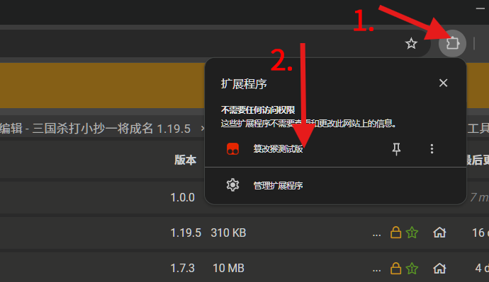
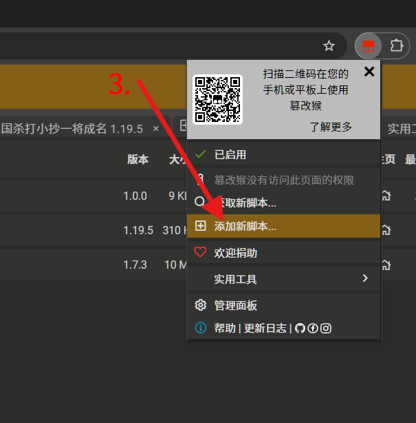
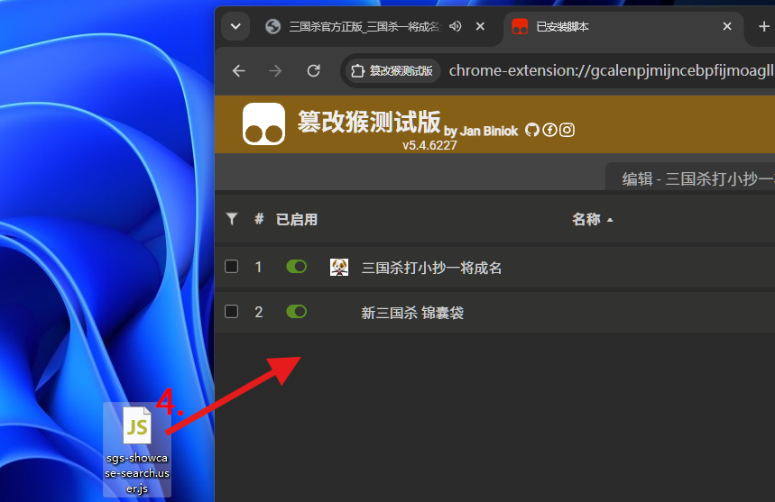
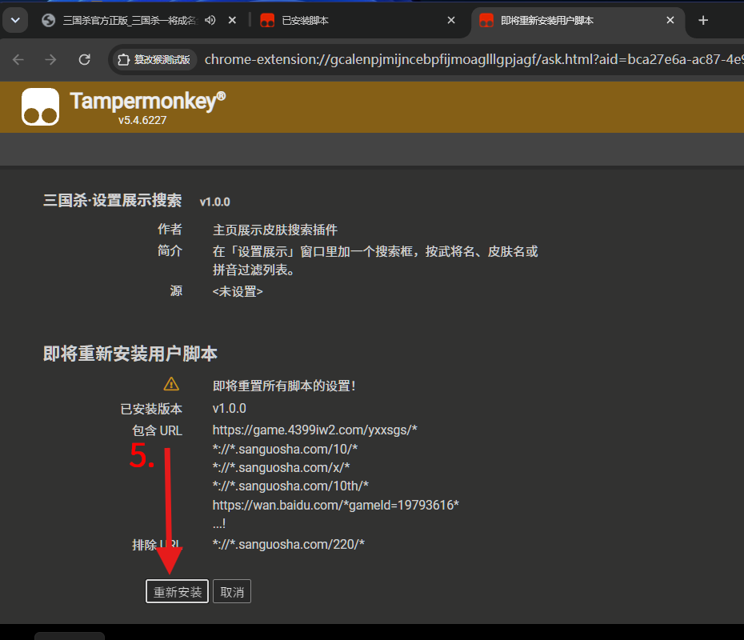
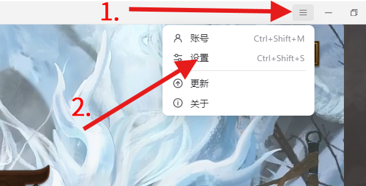
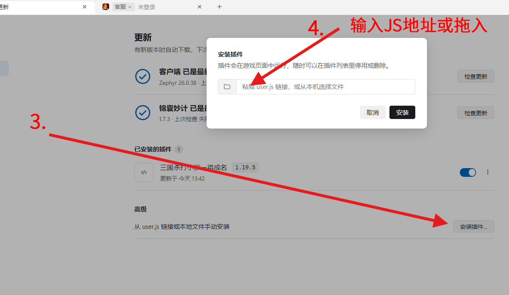

设置展示搜索 · 去红点 · 锦囊袋圆点 · 牌局屏蔽 · /sound 台词搜索 · 内置语音试听与发送 · 快捷键截图。
(๑•̀ㅂ•́)و✧ 把设置展示搜索、去红点、锦囊袋圆点、牌局屏蔽和 /sound 台词搜索打包进一个页签，台词内置语音试听与发送，不再需要额外的语音插件。所有功能默认关闭，想用哪个自己开。٩(ˊᗜˋ*)>
陆抗lukang。/sound 台词搜索：按台词内容或武将名搜索，武将名匹配的结果排在最前；结果右侧带对应皮肤头像；显示条数可输入，外面面板默认 10 条、/sound 弹窗默认 50 条。大厅里点击 = 试听，牌局里点击 = 发送。F12、P），按下时拦截该键的其他操作；支持连拍——快速连点每次都会抓一张，长按也会按 120ms 间隔持续拍，文件名带毫秒（sgs_年月日_时分秒_毫秒.png），同一秒多张也不会互相覆盖。截图音效收在一个抽屉里（点「截图音效」一行展开），共六个预设——无 / 保存音 / 提示音 / 截图音 / 快门音 / 自定义，默认「保存音」；四个内置音效都以 base64 直接内嵌在脚本里，离线也能响，需要自己的音频就点「自定义…」选本地文件。音效是叠音的：每张截图独立出声，连拍时上一声还没播完也不会被掐断（同时最多 12 个）。保存位置默认是电脑截图文件夹——首次截图时选一次「图片\屏幕截图」授权。▶ 按钮，点它预览这句台词的语音（大厅、牌局都能听）；牌局里点台词行则把语音发到聊天。播放与发送都由插件自己完成——优先走游戏自带的台词发送接口（ChatManager.SendSkinChatPhrase），锦囊袋语音发送 API 只作兜底，两条都不通时自动本地试听并提示。面板上会显示当前用的是哪条发送通道。值得注意的是：锦囊袋是作为死亡语音和不符合模式的语音发送必要支持，部分武将存在国战版本，所以部分武将点击国战版本只有有锦囊袋端的玩家才能听到；游戏原始语音通道仅支持普通武将语音（不含死亡）。
UpdatePanel，在 DataProvider 上按关键词过滤。ChatManager 解析消息前按「非自己 + 消息类型」拦掉牌局聊天。WeakMap 存补丁状态；同时替换 _events 里已绑定的 method（单个对象或数组都处理），覆盖动态皮肤、技能皮肤、入场、登场、皮肤套装等入口。PlayerSeat 的技能语音、技能资源语音、死亡语音，再对入场 / 登场等 UI 方法做语音静音；锦囊袋自己的「听他人台词」也同步关闭。/soundLaya.SoundManager.playSound 播目录里的音频（切句时先 stopSound 上一句）；发送按「游戏原生台词发送 → 锦囊袋 sendOfficialSkinPhrase → 本地试听」三级降级。脚本启动时先给 Laya.EventDispatcher.prototype.on/once 挂探针，把游戏注册过事件的管理器实例记成索引表，再用「方法名打分」找 *SkinChatPhrase* / Send*Phrase；命中后按 key → (key, text) → 对象 {key, confId, dialogIndex, skinId} 三种签名依次试。找不到时才退回浅层遍历全局对象与舞台节点（有节点上限，不会卡主线程）。Laya.stage.drawToCanvas(...).toBase64('image/png', 1) 抓游戏画面；四个内置音效（保存音 / 提示音 / 截图音 / 快门音）以 base64 直接内嵌在脚本里，自定义音效才落 IndexedDB（sgs-synthesize-media）——音效和保存目录句柄都存在那里，重启后仍在。未选目录时首次截图会打开一次文件夹选择（默认定位到「图片」），授权后所有截图静默写入，不再弹「另存为」；环境不支持时退回浏览器下载。截图快捷键在 keydown/keyup/keypress 捕获阶段拦截，命中后阻止该键继续传给游戏。在「综合」页签的「面板设置」里可以切换：
独立面板的标题栏和白色圆点都可以拖动，位置会记住。
还可以设置展开 / 关闭快捷键，默认没有。点快捷键按钮后按下组合键即可，例如 Ctrl+Shift+K；Esc 取消，Backspace 清除。
游戏里 个人信息 → 换展示 → 标题栏右侧搜索框；点 × 清空。
方式一：Tampermonkey（篡改猴）
下载 Tampermonkey 并确保其可用（浏览器插件设置打开「允许运行用户脚本」）。




方式二：锦囊妙计微端安装
下载 锦囊妙计客户端 进行配置。


基于该项目上进行了自主开发及调试，可能使用此开源项目的部分代码。（锦囊妙计客户端） (´･ω･`)
脚本头部已写入 @updateURL / @downloadURL，篡改猴和锦囊妙计客户端的「检查更新」都能识别到新版本。
牌局里发不出语音时，在控制台执行一次 __SGS_SYN_DIAG__()：它会打印当前通道、命中的对象与方法、已记录的游戏对象数量。把这段内容贴出来，就能判断是「没找到接口」还是「接口调用了但被拒绝」。
本插件由个人独立开发，与任何游戏官方、发行商、平台运营方无关联、无授权、无合作关系，不代表游戏官方立场，也未获得游戏官方的认可或背书。游戏中涉及的商标、版权及其他知识产权均归其各自权利人所有。
本插件在开发中使用了原项目的代码 / 资源，相关开源代码的著作权归原项目作者及其贡献者所有。
如原项目许可证要求分发源码、相同方式共享、保留声明或提供修改说明，开发者应遵守相应义务。用户在使用本插件时，也应遵守原项目许可证及本插件许可证的约束。
若本免责声明与原项目开源许可证存在冲突，就原项目代码部分而言，以原项目许可证为准。本声明不构成对原项目许可证的修改或替代。
用户在使用本插件前，应自行了解所使用游戏平台的用户协议、插件政策及相关规定。是否使用本插件由用户自行判断并承担全部风险。
因使用本插件可能导致的账号封禁、限制、数据丢失、虚拟财产损失、设备异常等后果，由用户自行承担，开发者不承担任何责任。
本插件可能因游戏版本更新、平台政策调整、原项目停止维护等原因出现功能失效、兼容性问题或运行异常，开发者不保证插件的持续可用性、安全性或无错误运行。
在法律允许的最大范围内，开发者及原项目作者、贡献者均不对本插件作出任何明示或默示担保，包括但不限于适销性、特定用途适用性、不侵权及无错误的保证。因使用或无法使用本插件而产生的任何直接、间接、附带、特殊或后果性损失，开发者及原项目作者、贡献者均不承担赔偿责任。
本插件中由开发者原创部分的著作权归开发者所有；原项目代码及资源的知识产权归其各自权利人所有。
未经相应权利人许可，禁止对本插件进行反编译、逆向工程、恶意修改、二次分发或用于商业用途，但开源许可证明确允许的除外。
用户不得利用本插件从事违反法律法规、侵犯他人权益、破坏游戏公平性或违反游戏平台规则的行为。
本插件可能包含或调用第三方组件、库或服务，相关权利和责任由该第三方按其许可证或服务条款承担。开发者不对第三方内容的合法性、安全性作超出法律规定的保证。
开发者保留随时修改本免责声明及插件功能的权力，修改后的条款自公布之日起生效。用户继续使用即视为接受变更后的条款。本声明由开发者负责解释，但不得违反适用法律及原项目开源许可证的强制性要求。
本声明适用 [国家 / 地区] 法律。因本声明引起的争议，双方应友好协商解决；协商不成的，提交 [管辖地] 有管辖权的机构处理。
项目使用人工智能辅助生成部分代码以及验证，包括但不限于部分 README.md 的文字、代码主体……
使用本插件即表示您已阅读、理解并同意上述全部条款。如不同意，请立即停止使用并删除本插件。